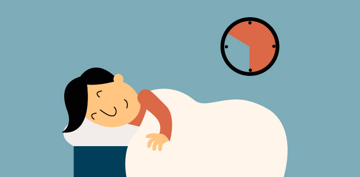
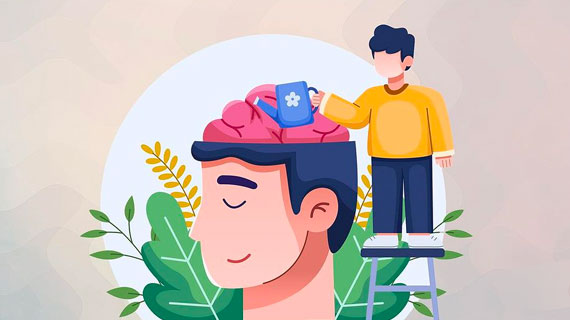
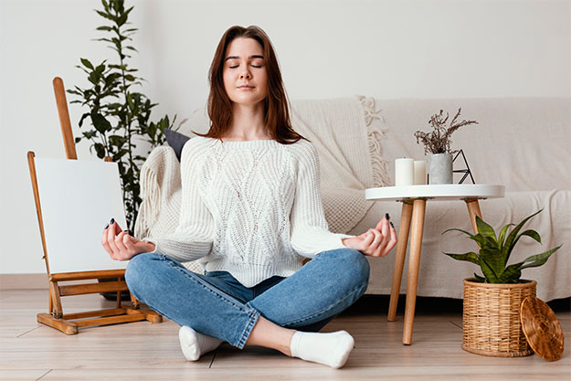

Movilidad articular
EL siguiente video muestra una serie de ejercicios denominados movilidad articular, la movilidad articular es importante en el transcurso del dia ya que nos permite relajar las extremidades principales del cuerpo antes, duante y despues de cada actividad.
Estiramiento de piernas
Los siguientes estiramientos permiten una postura comoda sin mucho movimiento en el puesto para poder estirar correctamente la zona inferior de nuestro cuerpo y asi mantener una compostura ideal en esta.
Estiramientos para brazos y hombros
Los siguientes estiramientos brindan una movilidad muy completa y estatica para la zona superior del cuerpo en brazos y hombros correctamente.
Ejercicios lumbares
Los ejercicios lumbares son movimientos simples que ayudan a fortalecer la parte baja de la espalda.
Hacer estos ejercicios regularmente puede reducir el dolor de espalda y mejorar la postura, ayudando a que tu espalda sea más fuerte y flexible.
A continuacion unos ejercicios lumbares para un mejor fortalecimiento y menor incomodidad.
Habitos saludables
Ademas de aplicar ejercicios para la prevencion de dolores lumbares, oseos y musculares es importante realizar un estilo de vida mediante habitos saludables.
1. alimentación saludable.
2. disfrute del tiempo libre.

3. sueño regular y de calidad.

4. hábitos de higiene y aseo personal.
5. Actividad fisica.
6. salud mental.

7. evitar el consumo de sustancias psicoactivas.
8. manejo del estrés y ansiedad.
